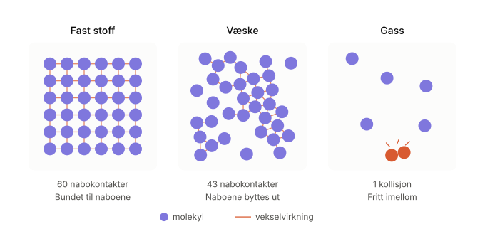
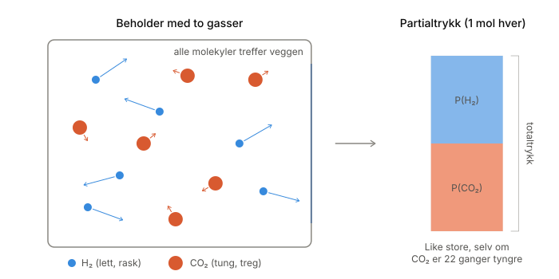

Gasser i bevegelse: Kinetisk teori, hastighetsfordelinger og den ideelle gassloven#
Læringsmål
Etter å ha arbeidet med dette kapitlet skal du kunne:
forklare hvorfor en fortynnet gass er enklere å beskrive statistisk enn væsker
beskrive Maxwell–Boltzmann-fordelingen og forklare hvordan temperatur og molekylmasse påvirker fartsfordelingen
tolke \(f(v)\) som en sannsynlighetstetthet og bruke arealet under fordelingskurven til å beskrive sannsynligheter
forklare sammenhengen mellom temperatur og gjennomsnittlig translasjonsenergi, og forklare forskjellen mellom temperatur og indre energi
forklare det mikroskopiske opphavet til trykk og hovedtrinnene i utledningen av den ideelle gassloven
bruke den ideelle gassloven og Daltons lov om partialtrykk i enkle beregninger
forklare når idealgassmodellen er en god tilnærming, og hvorfor reelle gasser kan avvike fra den
I de foregående kapitlene har vi bygd opp et generelt statistisk rammeverk. Vi har sett hvordan mikrotilstander og sannsynligheter gir opphav til makroskopiske størrelser, og hvordan Boltzmann-fordelingen og partisjonsfunksjonen kobler molekylære energier til temperatur, indre energi og entropi.
Nå skal vi bruke dette rammeverket på et konkret system: gasser. Gasser er den enkleste stofftilstanden å beskrive matematisk, og de gir derfor et naturlig sted å se hvordan den statistiske beskrivelsen faktisk gir opphav til målbare størrelser som temperatur og trykk.
Målet er ikke å pugge formler, men å forstå hvor de kommer fra. Vi skal bygge opp teorien fra bevegelsen til ett enkelt molekyl, via enorme mengder molekyler i tilfeldig bevegelse, og frem til makroskopiske størrelser som temperatur, trykk og den ideelle gassloven. Underveis skal vi også se hvordan Maxwell–Boltzmann-fordelingen følger av ideene vi allerede har møtt om energi og sannsynlighet.
Gasser som mangepartikkelsystem#
Hvorfor begynner vi anvendelsen av statistisk mekanikk med gasser?
Svaret er ikke at gasser er de enkleste stoffene, men at de er enklest å beskrive matematisk. Dette skyldes måten molekylene er organisert på.
Væsker og faste stoffer er kondenserte faser der molekylene ligger tett sammen og har en lokal orden. Hvert molekyl påvirkes hele tiden av nabomolekylene gjennom tiltrekkende og frastøtende krefter. Skal vi beskrive slike systemer, må vi derfor ta hensyn til et stort antall vekselvirkninger mellom partiklene.
I en fortynnet gass er situasjonen annerledes. Molekylene befinner seg langt fra hverandre og beveger seg fritt gjennom mesteparten av volumet. De påvirker hverandre først og fremst når de kolliderer, og mellom kollisjonene beveger de seg tilnærmet uavhengig av hverandre. Nettopp dette gjør gasser til et godt system for å bruke ideene fra statistisk mekanikk.

Samtidig inneholder en gass et enormt antall molekyler. Selv en liten gassprøve ved romtemperatur kan inneholde omkring \(10^{22}\) molekyler. Det er umulig å følge bevegelsen til hvert enkelt molekyl, men det er heller ikke nødvendig. I praksis er vi sjelden interessert i hva ett bestemt molekyl gjør. Det vi ønsker å beskrive, er egenskapene til hele gassen.
Kjerneidé
I en fortynnet gass er avstanden mellom molekylene stor sammenliknet med størrelsen deres. Mellom kollisjonene beveger molekylene seg derfor tilnærmet uavhengig av hverandre, mens de mange kollisjonene gjør at retning og fart for det enkelte molekylet stadig endres. Det er derfor mest hensiktsmessig å beskrive gassen statistisk. Dette gjør gasser langt enklere å beskrive enn væsker og faste stoffer, der partiklene hele tiden påvirker hverandre.
Her ser vi igjen koblingen mellom mikrotilstander og makrotilstander. Hvert molekyl har sin egen posisjon og hastighet, og den samlede informasjonen om alle molekylene utgjør en mikrotilstand. I laboratoriet måler vi derimot makroskopiske størrelser som temperatur, trykk og volum. Oppgaven vår blir derfor å forstå hvordan de mikroskopiske bevegelsene til enorme mengder molekyler gir opphav til de makroskopiske egenskapene vi faktisk kan observere.

Denne tankegangen er grunnlaget for kinetisk gassteori. I stedet for å beskrive hvert enkelt molekyl, beskriver vi de statistiske egenskapene til hele samlingen av molekyler. Det er denne overgangen fra enkeltpartikler til gjennomsnittlig oppførsel som gjør det mulig å forklare både temperatur, trykk og til slutt den ideelle gassloven.
Hvordan er molekylenes hastighet fordelt?#
Siden det er umulig å følge hvert enkelt molekyl, må vi bruke statistikk for å beskrive gassen som helhet. Et første spørsmål er: Har alle molekylene i en gass samme fart?
Det korte svaret er nei. Det er lett å se for seg at molekylene i en beholder suser av sted i et ganske jevnt tempo, men virkeligheten er langt mer kaotisk.
Hvis vi kunne ta et øyeblikksbilde av gassen og måle farten til hvert enkelt molekyl, ville vi funnet store forskjeller. Noen beveger seg langsomt, andre svært raskt, mens de fleste ligger et sted imellom.
Grunnen til dette spennet er at molekylene hele tiden kolliderer. Ved hvert støt utveksler de energi. Både fart og retning endrer seg derfor kontinuerlig for det enkelte molekylet.
Likevel skjer det noe bemerkelsesverdig: Selv om enkeltmolekylene hele tiden bytter hastighet, er den samlede fordelingen av hastigheter stabil i statistisk forstand så lenge systemet er i likevekt og temperaturen holdes konstant. Dette er et godt eksempel på dynamisk likevekt: Det skjer hele tiden endringer på mikronivå, samtidig som fordelingen og de makroskopiske egenskapene er stabile.
Maxwell–Boltzmann-fordelingen#
Her kan vi bygge direkte videre på Boltzmann-fordelingen fra forrige kapittel. Fra forrige kapittel vet vi at en mikrotilstand med energi E får en statistisk vekt som er proporsjonal med Boltzmann-faktoren:
Jo høyere energien er sammenliknet med \(k_BT\), desto mindre sannsynlig er mikrotilstanden.
For translasjonsbevegelsen til ett molekyl er den kinetiske energien
Boltzmann-faktoren blir derfor
Men dette er ikke hele historien. En bestemt fart \(v\) kan realiseres av mange forskjellige hastighetsvektorer: Molekylet kan bevege seg i hvilken som helst retning. Antallet slike muligheter øker med \(v^2\). Dette er den samme ideen vi tidligere møtte som degenerasjon: flere forskjellige mikrotilstander kan ha samme energi.
Når vi kombinerer Boltzmann-vekten med antallet mulige hastighetsvektorer, får vi formen til Maxwell–Boltzmann-fordelingen. Figuren nedenfor viser denne fordelingen for nitrogengass ved ulike temperaturer.
Fordelingen er ikke symmetrisk. Siden et molekyl ikke kan ha negativ fart, begynner kurven ved null. Mot høyre finnes ingen tilsvarende skarp grense, og kurven får derfor en hale mot høye hastigheter.
For en tredimensjonal idealgass er Maxwell–Boltzmann-fordelingen
Maxwell–Boltzmann-fordelingen
der \(m\) er massen til ett molekyl, \(T\) er temperaturen og \(v\) er farten.
Hva betyr egentlig \(f(v)\)?#
Det er viktig å være presis: \(f(v)\) er ikke antallet molekyler med nøyaktig fart \(v\). Det er derimot en kontinuerlig sannsynlighetstetthet. Sannsynligheten for at et tilfeldig valgt molekyl har fart mellom \(v\) og \(v+dv\) er omtrent
Tilsvarende finner vi sannsynligheten for at farten ligger mellom \(v_1\) og \(v_2\) som arealet under kurven mellom disse grensene:
Siden molekylet må ha en fart mellom null og uendelig, må hele fordelingen være normalisert:
Hvis gassen inneholder \(N\) molekyler, er det forventede antallet molekyler i et lite fartsintervall \(Nf(v)\,dv\). Formen på den normaliserte fordelingskurven avhenger derfor ikke av hvor mye gass vi har.
Hva påvirker fordelingen?#
Formen på kurven styres i hovedsak av to fysiske faktorer: temperatur og molekylmasse.
1. Temperatur#
Når temperaturen øker, øker den gjennomsnittlige translasjonsenergien. Fordelingskurven blir bredere og forskyves mot høyere fart. Toppen blir samtidig lavere fordi det samme totale sannsynlighetsarealet på 1 fordeles over et større fartsområde.
2. Molekylmasse#
Ved samme temperatur har lette og tunge molekyler samme gjennomsnittlige translasjonelle kinetiske energi. Men siden kinetisk energi er gitt ved \(E_k=\tfrac12mv^2\), må masse og fart balansere hverandre. Lette gasser som hydrogen eller helium har derfor en fartsfordeling som ligger ved høyere hastigheter enn tyngre gasser.
Siden Maxwell–Boltzmann-fordelingen ikke er symmetrisk, finnes det flere naturlige måter å beskrive en «typisk» fart på. Vi skal bruke tre: den mest sannsynlige farten \(v_\mathrm{mp}\), gjennomsnittsfarten \(\bar v\) og RMS-farten \(v_\mathrm{rms}\). De er forskjellige, men hver av dem forteller noe nyttig om fordelingen:
Disse ulike målene for «typisk fart» følger alltid denne rekkefølgen:
Alle tre skalerer som \(\sqrt{T/m}\): høyere temperatur gir større fart, mens større molekylmasse gir mindre fart.
Hint videre
Maxwell–Boltzmann-fordelingen får betydning langt utover gasslovene. Den energirike halen av fordelingen er viktig i reaksjonskinetikk, fordi temperatur påvirker hvor stor andel av molekylene som har høy energi. Forskjellen i typiske molekylhastigheter er også viktig for blant annet effusjon og diffusjon. Vi kommer tilbake til disse anvendelsene senere.
Underveisoppgave
Vi ser på oksygengass (O₂) ved temperatur \(T\). Farten til molekylene følger Maxwell-Boltzmann-fordelingen
\(f(v) = 4\pi\left(\frac{m}{2\pi k_B T}\right)^{3/2} v^2 e^{-mv^2/2k_BT}.\)
Vi får bruk for Gauss-integralene \(\int_0^\infty v^2 e^{-av^2}\,dv = \frac{1}{4}\sqrt{\frac{\pi}{a^3}}\) og \(\int_0^\infty v^3 e^{-av^2}\,dv = \frac{1}{2a^2}\), med \(a = \frac{m}{2k_BT}\).
a) Gjennomsnittsfarten er \(\bar v = \int_0^\infty v\, f(v)\, dv\). Regn ut dette integralet for hånd og vis at \(\bar v = \sqrt{\frac{8k_BT}{\pi m}}\). Hva forteller denne størrelsen oss om gassen?
b) Uten å regne: hva skjer med formen på \(f(v)\) hvis temperaturen \(T\) øker? Blir kurven bredere eller smalere, og flytter toppen seg mot høyere eller lavere fart? Forklar kort hvorfor.
Utfordring: Integrer \(f(v)\) over hele fartsområdet, \(\int_0^\infty f(v)\, dv\), for hånd og bekreft at resultatet blir \(1\). Hvorfor må dette være tilfelle for en sannsynlighetsfordeling?
Løsningsforslag
a) Vi setter inn \(f(v)\) i uttrykket for gjennomsnittsfarten:
\(\bar v = \int_0^\infty v\, f(v)\, dv = 4\pi\left(\frac{m}{2\pi k_BT}\right)^{3/2}\int_0^\infty v^3 e^{-av^2}\,dv.\)
Vi bruker \(\int_0^\infty v^3 e^{-av^2}\,dv = \frac{1}{2a^2}\) med \(a = \frac{m}{2k_BT}\), altså \(\frac{1}{2a^2} = \frac{1}{2}\left(\frac{2k_BT}{m}\right)^2\):
\(\bar v = 4\pi\left(\frac{m}{2\pi k_BT}\right)^{3/2}\cdot\frac{1}{2}\left(\frac{2k_BT}{m}\right)^2.\)
Vi samler faktorene. Skriver vi \(\left(\frac{m}{2\pi k_BT}\right)^{3/2} = \frac{1}{\pi^{3/2}}\left(\frac{m}{2k_BT}\right)^{3/2}\), blir produktet av potensene av \(\frac{m}{2k_BT}\) lik \(\left(\frac{m}{2k_BT}\right)^{3/2}\left(\frac{2k_BT}{m}\right)^2 = \left(\frac{2k_BT}{m}\right)^{1/2}\). Da står vi igjen med
\(\bar v = \frac{4\pi}{2\pi^{3/2}}\left(\frac{2k_BT}{m}\right)^{1/2} = \frac{2}{\sqrt{\pi}}\sqrt{\frac{2k_BT}{m}} = \sqrt{\frac{8k_BT}{\pi m}}.\)
Gjennomsnittsfarten er den middelfarten molekylene har ved temperaturen \(T\). Den øker med kvadratroten av temperaturen og synker med kvadratroten av massen - tunge molekyler beveger seg altså langsommere enn lette ved samme temperatur.
b) Når \(T\) øker, blir kurven bredere og lavere, og toppen flytter seg mot høyere fart. Grunnen er at høyere temperatur gir molekylene mer termisk energi, så de beveger seg raskere i gjennomsnitt, og fartene sprer seg over et større område. Arealet under kurven holder seg \(1\), så når kurven trekkes utover, må den samtidig bli lavere.
Utfordring: Vi integrerer hele fordelingen:
\(\int_0^\infty f(v)\, dv = 4\pi\left(\frac{m}{2\pi k_BT}\right)^{3/2}\int_0^\infty v^2 e^{-av^2}\,dv.\)
Nå bruker vi \(\int_0^\infty v^2 e^{-av^2}\,dv = \frac{1}{4}\sqrt{\frac{\pi}{a^3}}\) med \(a = \frac{m}{2k_BT}\), altså \(\frac{1}{4}\sqrt{\pi\left(\frac{2k_BT}{m}\right)^3}\):
\(\int_0^\infty f(v)\, dv = 4\pi\left(\frac{m}{2\pi k_BT}\right)^{3/2}\cdot\frac{1}{4}\sqrt{\pi\left(\frac{2k_BT}{m}\right)^3}.\)
Potensene av \(\frac{m}{2k_BT}\) og \(\frac{2k_BT}{m}\) er inverse og kanselleres, og \(\pi\)-faktorene og 4-tallet går opp. Resultatet blir
\(\int_0^\infty f(v)\, dv = 1.\)
Det må være slik fordi \(f(v)\) er en sannsynlighetsfordeling: molekylet har med sikkerhet en fart et sted mellom \(0\) og uendelig, så arealet under hele kurven må være nøyaktig \(1\).
Utforsk
I simuleringen nedenfor kan du undersøke hvordan fartsfordelingen endres når du varierer temperatur og molekylmasse. Legg særlig merke til hvordan kurvens plassering, bredde og hale endres, og hvordan en fast energiterskel skjærer ulike deler av fordelingen.
I simuleringen er \(v^*\) en valgt terskelfart. Molekyler med fart større enn \(v^*\) har i denne forenklede modellen en translasjonsenergi over den valgte energibarrieren.
Underveisoppgave
Velg H₂ og legg merke til hvor kurven ligger. Bytt så til CO₂ uten å røre temperaturen.
Kurven flytter seg dramatisk. Men temperaturen er jo den samme.
Hvis temperatur var det samme som «hvor fort molekylene beveger seg», hvordan kunne to gasser med samme temperatur ha så forskjellig fart?
Hint
Temperatur måler ikke fart alene. For translasjonsbevegelsen er det den gjennomsnittlige kinetiske energien som bestemmes av temperaturen, og denne er avhengig av både fart og masse ($0.5mv^2).
Et CO₂-molekyl er omtrent 22 ganger tyngre enn et H₂-molekyl. Skal de ha samme gjennomsnittlige translasjonsenergi, må det lette molekylet bevege seg betydelig raskere.
Underveisoppgave
Tenk deg at vi gjør boksen dobbelt så stor og putter inn dobbelt så mange \(\mathrm{N_2}\)-molekyler, men beholder temperaturen på \(298\ \mathrm{K}\). Hvordan vil den normaliserte fordelingskurven \(f(v)\) endre seg? Vil toppen bli dobbelt så høy eller flytte på seg?
Hint
Den normaliserte kurven vil se nøyaktig lik ut. Maxwell–Boltzmann-fordelingen \(f(v)\) viser en sannsynlighetstetthet, ikke det totale antallet molekyler. Når temperaturen og molekylmassen er uendret, er formen på fordelingen den samme selv om vi endrer mengden gass.
Underveisoppgave
Dra temperaturen oppover og se på toppen av kurven. Den blir ikke bare forskjøvet mot høyre, men også lavere.
Molekylene forsvinner ikke når du varmer opp gassen. Hvorfor blir toppen likevel lavere?
Hint
Det totale arealet under sannsynlighetsfordelingen er alltid 1. Ved høyere temperatur blir fordelingen bredere og sannsynligheten fordeles over et større fartsområde. Når kurven blir bredere, må toppen derfor bli lavere.
Hva er egentlig temperatur?#
Vi har allerede sett på den generelle, termodynamiske definisjonen av temperatur gjennom sammenhengen mellom entropi og energi. For en idealgass får temperatur i tillegg en særlig enkel molekylær tolkning.
Temperatur og molekylbevegelse#
I en idealgass ser vi bort fra intermolekylære krefter mellom partiklene. For en monoatomisk idealgass betyr det at den indre kinetiske energien består av translasjonsenergi. For molekylære gasser kan den indre energien i tillegg inneholde rotasjons- og vibrasjonsbidrag, slik vi så i forrige kapittel.
Når energinivåene ligger så tett at forskjellene mellom dem er små sammenliknet med den termiske energien \(k_\mathrm{B}T\), kan vi i praksis behandle energien som kontinuerlig. Da sier vi at systemet er i den klassiske grensen.
I denne grensen gjelder ekvipartisjonsteoremet: Hvert uavhengige energibidrag som avhenger kvadratisk av en bevegelsesvariabel, for eksempel \(\frac12mv_x^2\), bidrar i gjennomsnitt med
til energien per molekyl.
Dette betyr ikke at alle molekylene har nøyaktig denne energien. Maxwell–Boltzmann-fordelingen viser nettopp at energien er fordelt over et stort spenn. Uttrykket beskriver gjennomsnittet.
For \(n\) mol blir den totale translasjonsenergien
Kjerneidé
For en klassisk idealgass er den gjennomsnittlige translasjonsenergien per molekyl bestemt av temperaturen. Ved samme temperatur har derfor lette og tunge molekyler samme gjennomsnittlige translasjonsenergi, men forskjellige typiske farter.:::
OBS: per molekyl eller per mol?
Vi kan beskrive den samme fysikken enten for ett molekyl eller for ett mol molekyler.
Når vi ser på ett molekyl, bruker vi Boltzmanns konstant \(k_\mathrm{B}\). Den gjennomsnittlige translasjonsenergien er da
Når vi i stedet regner per mol, bruker vi gasskonstanten \(R\). Da blir den tilsvarende energiskalaen \(RT\).
Sammenhengen mellom de to nivåene er
der \(N_A\) er Avogadros tall.
Det samme gjelder massen: \(m\) er massen til ett molekyl, mens \(M\) er molar masse. De henger sammen gjennom
Derfor må vi være konsekvente: bruker vi energi per molekyl, bruker vi \(k_\mathrm{B}T\); bruker vi energi per mol, bruker vi \(RT\).
Temperatur er ikke det samme som energi#
Vi minner om at temperatur ikke er det samme som energi, selv om de to størrelsene henger sammen. Det ser vi tydelig når et stoff skifter fase. Når is ved smeltepunktet tar opp energi, kan temperaturen holde seg konstant mens isen smelter. Energien går da til å endre den molekylære organiseringen og de intermolekylære vekselvirkningene, ikke bare til å øke molekylenes bevegelsesenergi. Vi skal se nærmere på faseendringer i senere kapitler.
Temperaturen sier derfor ikke hvor mye total indre energi et system inneholder. Den forteller hvordan energi er fordelt og hvilken termisk tilstand systemet befinner seg i.

Underveisoppgave🍧
Du har \(1\ \mathrm{mol}\) heliumgass ved \(0\ ^\circ\mathrm{C}\) og en stor blokk med is ved \(0\ ^\circ\mathrm{C}\). Begge har samme temperatur. Betyr det at de har samme indre energi per partikkel?
Løsningsforslag
Nei. Samme temperatur betyr at systemene er i samme termiske tilstand, men den indre energien avhenger også av hvilke frihetsgrader og intermolekylære vekselvirkninger som finnes. Heliumgassen og isen har derfor ikke samme indre energi per partikkel selv om temperaturen er den samme.
Tilbake til den generelle temperaturdefinisjonen#
I entropikapitlet definerte vi temperatur ved
Denne definisjonen er generell. Sammenhengen
er derimot et resultat for klassisk translasjonsbevegelse. Gassmodellen gir oss dermed en konkret molekylær tolkning av et temperaturbegrep som gjelder langt mer generelt.
Når temperaturen øker, blir Maxwell–Boltzmann-fordelingen bredere og forskyves mot høyere fart. Det får store konsekvenser i kjemien, fordi andelen molekyler i den energirike halen av fordelingen øker raskt. Vi kommer tilbake til dette når vi studerer reaksjonskinetikk.
Hvor kommer trykk fra?#
Vi har nå knyttet temperatur til den statistiske fordelingen av molekylenes bevegelse. Nå skal vi gjøre noe som er selve kjernen i kinetisk gassteori: Vi skal utlede en makroskopisk, målbar størrelse fra molekylær mekanikk.
Trykk er noe håndgripelig som du kan lese av på et manometer. Vi skal nå vise hvordan dette trykket følger av at gassen består av partikler som beveger seg og kolliderer med veggene i beholderen.
Hvorfor har en gass trykk?#
Når du åpner en brusflaske, hører du det med én gang: et karakteristisk sus når gassen slipper ut. Før du åpnet flasken, trykket gassen inni mot glasset, mot væskeoverflaten og mot korken – jevnt, i alle retninger, og helt uten pause. Det samme skjer inni et bildekk, i en ballong og i lufta rundt deg akkurat nå.

Men hva er egentlig dette trykket? Hva er det som faktisk dytter?
Trykk
Trykk er definert som kraft per areal:
SI-enheten for trykk er pascal (\(\mathrm{Pa}\)), der \(1\ \mathrm{Pa}=1\ \mathrm{N/m^2}\).
Svaret ligger på molekylnivå#
Kjerneidé
Trykk oppstår fordi et enormt antall molekyler kolliderer med veggene i beholderen og overfører bevegelsesmengde til dem.
Ett enkelt molekyl som treffer en vegg, gir et ekstremt lite dytt. Men en gass inneholder astronomiske mengder molekyler, og de kolliderer med veggene kontinuerlig. Når vi summerer alle disse små, tilfeldige støtene, får vi makroskopisk en jevn kraft mot veggen. Det er denne kraften per areal vi kaller trykk.

Dette er et godt eksempel på hvordan en makroskopisk egenskap oppstår fra mikroskopiske hendelser. Trykk er ikke en egenskap ved ett bestemt molekyl, men en statistisk egenskap ved hele gassen.
Utledning av den ideelle gassloven#
Fra generell kjemi kjenner du til den ideelle gassloven. Her skal vi utlede den ved hjelp av molekylære prinsipper.
Før vi begynner, er det nyttig å vite hva vi prøver å gjøre. Vi skal først finne hvor mye bevegelsesmengde ett molekyl overfører i ett støt. Deretter teller vi hvor mange molekyler som kan nå veggen i løpet av et kort tidsintervall og summerer bidragene deres. Til slutt kobler vi molekylenes bevegelse til temperatur.
Ideelle gasser#
Vi regner her med at gassen er ideell. Dette er en rimelig modell for mange gasser ved normale trykk- og temperaturtilstander. Det betyr at vi gjør to sentrale antakelser:
Molekylene behandles som punkter uten eget volum.
Det finnes ingen intermolekylære krefter mellom molekylene mellom kollisjonene.
Vi antar i tillegg at kollisjonene er elastiske, slik at total kinetisk energi bevares i støtene.
Litt om bevegelsesmengde#
For å utlede gassloven trenger vi bare én sentral størrelse fra mekanikken.
Bevegelsesmengde er definert som \(p=mv\). Kraft kan uttrykkes som endring i bevegelsesmengde per tid (mer om gjennomsnittlig endringsrate):
Skal vi finne kraften gassen utøver på en vegg, trenger vi derfor å finne ut to ting: hvor mye bevegelsesmengde som overføres i hvert støt, og hvor ofte støtene skjer.
Utledningen, trinn for trinn#
Vi ser på en beholder med volum \(V\). Veggen vi studerer har areal \(A\), og beholderen inneholder \(N\) molekyler, hvert med masse \(m\).
Trinn 1: Ett støt#
Et molekyl treffer veggen med hastighetskomponenten \(v_x\). Vi antar at støtet er elastisk. Molekylet spretter tilbake med samme fartskomponent, men i motsatt retning: \(v_x\rightarrow-v_x\). Bevegelsen parallelt med veggen blir ikke påvirket.
Før støtet har molekylet bevegelsesmengden \(+mv_x\) i \(x\)-retningen. Etter støtet beveger det seg motsatt vei og har bevegelsesmengden \(-mv_x\). Endringen blir derfor
Vi er interessert i størrelsen på bevegelsesmengden som overføres til veggen:
Veggen mottar like stor bevegelsesmengde i motsatt retning.
Trinn 2: Hvor mange molekyler når veggen i løpet av \(\Delta t\)?#
I en virkelig gass kolliderer molekylene også med hverandre. Vi bør derfor ikke basere utledningen på at det samme molekylet nødvendigvis går helt til motsatt vegg og tilbake. I stedet teller vi hvor mange molekyler som kan nå veggen i løpet av et kort tidsintervall \(\Delta t\).
Middelfri vei
Den middelfrie veien, ofte skrevet \(\lambda\), er den gjennomsnittlige avstanden et molekyl beveger seg mellom to kollisjoner med andre molekyler. I en vanlig gass kan \(\lambda\) være mye mindre enn avstanden mellom veggene i beholderen. Derfor er det mer generelt å telle strømmen av molekyler mot veggen enn å følge ett bestemt molekyl fra vegg til vegg.
Tenk på et molekyl som beveger seg mot veggen med en positiv hastighetskomponent \(v_x\). I løpet av tiden \(\Delta t\) rekker det avstanden
langs \(x\)-retningen. Bare molekyler som ved starten av tidsintervallet befinner seg i et tynt lag med denne tykkelsen, kan derfor nå veggen. Veggen har areal \(A\), så laget har volum
og utgjør brøkdelen
av hele gassvolumet. Ved likevekt er molekylene jevnt fordelt i volumet. Den samme brøkdelen angir derfor sannsynligheten for at et molekyl med denne \(v_x\) befinner seg nær nok veggen til å treffe den i løpet av \(\Delta t\).
Trinn 3: Fra antall støt til kraft#
Fra trinn 1 vet vi at et molekyl som treffer veggen, overfører bevegelsesmengden \(2mv_x\). For molekyl \(i\) med \(v_{x,i}>0\) blir det forventede bidraget til bevegelsesmengden i løpet av \(\Delta t\) derfor
Når vi summerer over alle molekylene som beveger seg mot veggen, får vi
Ved likevekt er bevegelsen isotrop: positive og negative \(v_x\) forekommer symmetrisk. Siden vi summerer \(v_x^2\), gir de to retningene like store bidrag i gjennomsnitt. For et makroskopisk antall molekyler kan vi derfor skrive
og kraften på veggen blir
Vi innfører nå gjennomsnittet
og får dermed
Her ser vi hvorfor hastighetskomponenten kommer inn i andre potens: Molekyler med stor \(v_x\) overfører mer bevegelsesmengde i hvert støt og kan nå veggen fra et større volum i løpet av samme tidsintervall.
Trinn 4: Fra \(v_x\) til den totale farten \(v\)#
For ett molekyl er farten knyttet til de tre hastighetskomponentene ved
Det samme gjelder når vi tar gjennomsnittet over alle molekylene:
Ingen retning er foretrukket i en gass ved likevekt. Bevegelsen er derfor i gjennomsnitt fordelt likt mellom de tre romretningene:
Dermed får vi
Trinn 5: Fra kraft til trykk#
Nå går vi fra kraften på én vegg til trykket i gassen. Trykk er kraft per areal:
Fra trinn 3 har vi
Når vi deler på veggens areal \(A\), får vi derfor direkte
Fra trinn 4 vet vi at
og dermed
Dette er et rent mekanisk resultat. Vi har ennå ikke brukt temperaturbegrepet.
Den gjennomsnittlige translasjonsenergien til ett molekyl er
Dermed kan vi skrive
Trykket bestemmes altså av hvor mange partikler vi har per volum, og hvor stor translasjonsenergi de i gjennomsnitt har.
Trinn 6: Temperaturen kobles på#
Nå trenger vi broa mellom molekylenes bevegelse og den makroskopiske temperaturen.
Fra ekvipartisjonsteoremet i forrige kapittel vet vi at de tre translasjonelle frihetsgradene til sammen gir
Setter vi dette inn i uttrykket over, får vi
og dermed
Dette er idealgassloven skrevet på partikkelnivå. For å få den vanlige formen bruker vi
og
Da får vi til slutt
Vi har dermed utledet idealgassloven ved å koble molekylenes bevegelse til statistiske gjennomsnittsverdier og temperatur.
Tilstandslikningen for ideelle gasser
Underveisoppgave
Den ideelle gassloven er \(PV = nRT\), der \(R = 8.314\ \text{J/(mol K)}\). Stoffmengden kan også skrives \(n = \frac{m}{M}\), der \(m\) er massen og \(M\) molmassen.
a) En beholder på \(5.0\ \text{L}\) inneholder \(2.0\ \text{mol}\) gass ved \(25\ \text{°C}\). Finn trykket i beholderen.
b) En kolbe på \(2.0\ \text{L}\) inneholder \(8.0\ \text{g}\) oksygengass (O₂, molmasse \(32\ \text{g/mol}\)) ved \(25\ \text{°C}\). Finn trykket i kolben.
c) En gassbeholder på \(10\ \text{L}\) inneholder nitrogengass (N₂, molmasse \(28\ \text{g/mol}\)) ved et trykk på \(1.5\ \text{bar}\) og en temperatur på \(27\ \text{°C}\). Finn massen av gassen i beholderen.
Løsningsforslag
Gasskonstanten \(R = 8.314\ \text{J/(mol K)}\) krever SI-enheter: volum i \(\text{m}^3\), trykk i \(\text{Pa}\), temperatur i \(\text{K}\) og masse i \(\text{kg}\). Vi må derfor gjøre om alle oppgitte størrelser først.
a) Vi gjør om: \(V = 5.0\ \text{L} = 5.0 \times 10^{-3}\ \text{m}^3\) og \(T = 25\ \text{°C} = 298\ \text{K}\). Løser for trykket:
\(P = \frac{nRT}{V} = \frac{2.0 \cdot 8.314 \cdot 298}{5.0 \times 10^{-3}} = 9.9 \times 10^5\ \text{Pa} \approx 9.9\ \text{bar}\)
b) Vi gjør om: \(V = 2.0\ \text{L} = 2.0 \times 10^{-3}\ \text{m}^3\), \(T = 298\ \text{K}\), \(m = 8.0\ \text{g} = 8.0 \times 10^{-3}\ \text{kg}\) og \(M = 32\ \text{g/mol} = 32 \times 10^{-3}\ \text{kg/mol}\). Først stoffmengden:
\(n = \frac{m}{M} = \frac{8.0 \times 10^{-3}}{32 \times 10^{-3}} = 0.25\ \text{mol}\)
Så trykket:
\(P = \frac{nRT}{V} = \frac{0.25 \cdot 8.314 \cdot 298}{2.0 \times 10^{-3}} = 3.1 \times 10^5\ \text{Pa} \approx 3.1\ \text{bar}\)
c) Vi gjør om: \(V = 10\ \text{L} = 10 \times 10^{-3}\ \text{m}^3\), \(P = 1.5\ \text{bar} = 1.5 \times 10^5\ \text{Pa}\), \(T = 27\ \text{°C} = 300\ \text{K}\) og \(M = 28\ \text{g/mol} = 28 \times 10^{-3}\ \text{kg/mol}\). Først stoffmengden:
\(n = \frac{PV}{RT} = \frac{1.5 \times 10^5 \cdot 10 \times 10^{-3}}{8.314 \cdot 300} = 0.60\ \text{mol}\)
Så massen fra \(n = \frac{m}{M}\), altså \(m = nM\):
\(m = 0.60 \cdot 28 \times 10^{-3}\ \text{kg} = 1.7 \times 10^{-2}\ \text{kg} = 17\ \text{g}\)
Du kan også utforske utledningen av idealgassloven ved hjelp av simuleringen nededenfor.
Daltons lov om partialtrykk#
Hva skjer når en gass består av flere ulike stoffer?
Til nå har vi stort sett sett for oss en gass med bare én type molekyler. Men går vi tilbake til utledningen av den ideelle gassloven, ser vi at vi aldri brukte at alle molekylene måtte være like. Vi summerte bidraget fra hvert molekyl som traff veggen, og det fungerer like godt for en gassblanding.
Vi kan derfor gruppere molekylene etter hvilken gass de tilhører. Anta at en beholder inneholder nitrogen (\(\mathrm{N_2}\)) og oksygen (\(\mathrm{O_2}\)). Ved samme temperatur har begge komponentene samme gjennomsnittlige translasjonsenergi per molekyl, selv om de har ulike masser og typiske farter.
Hver komponent kan derfor behandles som om den var alene i det samme volumet. For komponent \(i\) får vi
Størrelsen \(P_i\) kalles partialtrykket. Det er trykket denne komponenten ville hatt dersom den alene fylte beholderen ved samme temperatur og volum.
Fordi hver gass bidrar uavhengig, blir totaltrykket summen av partialtrykkene:
Dette er Daltons lov om partialtrykk.
Det er ofte praktisk å bruke molfraksjonen, eller molbrøken,
Da får vi
Utgjør nitrogen for eksempel 80 % av stoffmengden i en ideell gassblanding, står nitrogen også for 80 % av totaltrykket.
Eksempel
En beholder inneholder
1 mol \(\mathrm{H_2}\)
1 mol \(\mathrm{CO_2}\)
ved samme temperatur.
Siden begge gassene har samme stoffmengde, får de like store partialtrykk:
Dette kan virke overraskende, fordi et \(\mathrm{CO_2}\)-molekyl er omtrent 22 ganger tyngre enn et \(\mathrm{H_2}\)-molekyl.

Nøkkelen er at de tunge molekylene beveger seg saktere. De overfører mer bevegelsesmengde i hvert typiske støt, men treffer veggen sjeldnere. De lette molekylene treffer oftere, men overfører mindre bevegelsesmengde per støt. Ved samme temperatur veier disse effektene opp for hverandre.
For en ideell gass er det derfor antall molekyler, ikke molekylmassen i seg selv, som avgjør partialtrykket.
Underveisoppgave
I samme beholder gir 1 mol \(\mathrm{H_2}\) og 1 mol \(\mathrm{CO_2}\) like store partialtrykk, selv om molekylmassene er svært forskjellige. Forklar med egne ord hvorfor forskjellen i typisk fart ikke fører til forskjellige partialtrykk.
Løsningsforslag
Partialtrykket er gitt ved \(p = \frac{nRT}{V}\), og avhenger bare av stoffmengden, temperaturen og volumet - ikke av molekylmassen. Siden begge gassene har 1 mol i samme beholder ved samme temperatur, blir partialtrykkene like.
At de typiske fartene er forskjellige, spiller ingen rolle: de lette \(\mathrm{H_2}\)-molekylene beveger seg raskt, men treffer veggen med liten kraft per støt, mens de tunge \(\mathrm{CO_2}\)-molekylene beveger seg sakte, men treffer hardere. De to effektene opphever hverandre nøyaktig, så hvert molekyl bidrar like mye til trykket i gjennomsnitt - uansett masse.
Oppsummering
Den ideelle gassloven ble historisk oppdaget gjennom eksperimentelle målinger. Kinetisk gassteori viser hvorfor loven følger av molekylær bevegelse.
Symbol |
Mikroskopisk betydning |
|---|---|
\(P\) (trykk) |
Hvor mye bevegelsesmengde molekylene samlet overfører til veggene per tid og areal. |
\(V\) (volum) |
Hvor stort rom partiklene har å bevege seg i. |
\(N\) (antall) |
Hvor mange molekyler som bidrar. |
\(T\) (temperatur) |
Bestemmer den gjennomsnittlige translasjonsenergien per molekyl. |
Tre viktige innsikter å ta med videre#
Trykk er en statistisk størrelse. Ett enkelt molekyl har ikke et stabilt makroskopisk trykk. Trykk oppstår når vi midler over enorme mengder kollisjoner.
Trykk er en intensiv størrelse. Hvis vi slår sammen to identiske beholdere med gass ved samme temperatur og trykk, dobles både volumet og antallet partikler, mens trykket forblir det samme.
Mønsteret i tankegangen er kjernen i statistisk mekanikk. Vi starter med en mikroskopisk modell, bruker sannsynligheter og gjennomsnittsverdier, og ender med en makroskopisk størrelse vi kan måle.
Hint videre: et lite blikk på reelle gasser
Utledningen ovenfor er elegant, men hviler på sterke forenklinger. I virkeligheten har molekyler et endelig volum, og de vekselvirker med hverandre.
Molekylenes eget volum: Ved høyt trykk opptar molekylene en ikke-neglisjerbar del av beholderen. Det tilgjengelige volumet blir mindre enn \(V\), og dette kan gi et høyere trykk enn idealgassmodellen forutsier.
Intermolekylære tiltrekningskrefter: Tiltrekning mellom molekylene reduserer i gjennomsnitt overføringen av bevegelsesmengde til veggene og kan gi lavere trykk enn idealgassmodellen forutsier.
Ved lav tetthet og tilstrekkelig høy temperatur er disse avvikene ofte små. Ved høyt trykk eller lav temperatur blir de stadig viktigere. I neste kapittel ser vi derfor nærmere på intermolekylære krefter og reelle gasser.
Temperatur, trykk og likevekt – et blikk framover#
Så langt har vi brukt kinetisk gassteori til å forstå trykk, temperatur og den ideelle gassloven fra et molekylært perspektiv. De samme størrelsene, særlig temperatur og trykk, blir også viktige når vi senere skal studere kjemiske reaksjoner og likevekter.
Her er det viktig å skille mellom to spørsmål: «Hvor raskt skjer en reaksjon?» og «Hvilken sammensetning gjelder for likevekten?».
Når temperaturen øker, endres Maxwell–Boltzmann-fordelingen. En større andel av molekylene får da tilstrekkelig energi til å passere en aktiveringsbarriere, og reaksjonshastigheten kan øke kraftig. Dette handler om kinetikk.
Temperaturen kan imidlertid også påvirke selve likevektsposisjonen. Dette er en termodynamisk effekt som vi senere skal knytte til Gibbs-energi og likevektskonstanten.
Trykk blir særlig viktig for reaksjoner mellom gasser. Dersom antallet gassmolekyler er forskjellig på de to sidene av en reaksjon, kan en endring i trykk forskyve likevekten. Også dette er en termodynamisk effekt.
Viktig skille
Maxwell–Boltzmann-fordelingen og aktiveringsenergien hjelper oss å forstå reaksjonshastighet likevektsposisjonen bestemmes av termodynamikken en katalysator kan endre hvor raskt likevekten nås, men ikke hvor likevekten ligger
Vi kommer tilbake til både kjemisk kinetikk og kjemisk likevekt senere i kurset.
Oppgaver#
Oppgave 1: Hvorfor er gasser enkle å beskrive?
En gass, en væske og et fast stoff kan alle bestå av nøyaktig de samme molekylene, men gassen er ofte mye enklere å beskrive statistisk.
a) Forklar hvorfor en fortynnet gass er enklere å beskrive enn en væske eller et fast stoff.
b) Hvilke to sentrale antakelser gjør vi om molekylene i en idealgass?
c) Under hvilke forhold forventer du at en virkelig gass oppfører seg mest ideelt: ved høyt eller lavt trykk, og ved høy eller lav temperatur? Begrunn svaret på molekylnivå.
Løsningsforslag
a) I en fortynnet gass er molekylene langt fra hverandre og beveger seg tilnærmet uavhengig mellom kollisjonene. I væsker og faste stoffer ligger molekylene mye tettere, slik at intermolekylære krefter hele tiden påvirker bevegelsen deres. Vi må derfor ta hensyn til langt flere vekselvirkninger.
b) I idealgassmodellen antar vi at
molekylene kan behandles som punktpartikler uten eget volum
det ikke virker intermolekylære krefter mellom molekylene mellom kollisjonene
I tillegg antar vi elastiske kollisjoner.
c) En virkelig gass oppfører seg mest ideelt ved lavt trykk og høy temperatur. Ved lavt trykk er avstanden mellom molekylene stor, slik at både molekylenes eget volum og intermolekylære krefter får liten betydning. Ved høy temperatur er molekylenes kinetiske energi stor sammenliknet med energien knyttet til tiltrekningen mellom dem.
Oppgave 2: Maxwell–Boltzmann-fordelingen
To beholdere inneholder henholdsvis \(N_2\) og \(O_2\) ved samme temperatur.
a) Har alle molekylene i hver beholder samme fart? Forklar kort.
b) Hva betyr det at \(f(v)\) er en sannsynlighetstetthet og ikke en sannsynlighet?
c) Hva representerer arealet under Maxwell–Boltzmann-kurven mellom fartene \(v_1\) og \(v_2\)?
d) Sammenlikn fartsfordelingen til \(N_2\) og \(O_2\). Hvilken av gassene har størst typiske farter? Begrunn uten å regne.
e) Temperaturen til begge gassene dobles. Hvordan påvirkes fordelingen?
f) Sett de tre størrelsene i riktig rekkefølge:
Løsningsforslag
a) Nei. Molekylene kolliderer og utveksler energi, slik at de til enhver tid har en fordeling av forskjellige farter. Ved termisk likevekt er selve fordelingen stabil selv om farten til hvert enkelt molekyl hele tiden endrer seg.
b) \(f(v)\) angir hvor tett sannsynligheten er fordelt omkring farten \(v\). Verdien \(f(v)\) alene er derfor ikke sannsynligheten for at et molekyl har nøyaktig denne farten.
For et lite intervall \(dv\) er sannsynligheten
c) Arealet representerer sannsynligheten for at et tilfeldig valgt molekyl har en fart mellom \(v_1\) og \(v_2\):
Det totale arealet under hele kurven er 1.
d) \(N_2\) har lavere molekylmasse enn \(O_2\) og får derfor større typiske farter ved samme temperatur. Begge gassene har imidlertid samme gjennomsnittlige translasjonsenergi per molekyl.
e) Fordelingen forskyves mot større farter og blir bredere og lavere. Arealet under kurven er fortsatt 1.
Alle de karakteristiske fartene er proporsjonale med \(\sqrt{T}\), så en dobling av temperaturen øker dem med en faktor \(\sqrt{2}\).
f)
Oppgave 3: Temperatur og molekylær bevegelse
Vi sammenlikner helium, nitrogen og karbondioksid ved samme temperatur.
a) Hvilken av gassene har størst gjennomsnittlig translasjonsenergi per molekyl?
b) Hvilken av gassene har størst typisk fart?
c) Forklar hvorfor svarene på a) og b) ikke er i konflikt med hverandre.
d) En gass varmes fra 300 K til 600 K. Hvor mye endres den gjennomsnittlige translasjonsenergien per molekyl?
e) Betyr samme temperatur nødvendigvis at to stoffprøver har samme indre energi? Forklar.
Løsningsforslag
a) De har samme gjennomsnittlige translasjonsenergi. For en klassisk idealgass er
Denne størrelsen avhenger av temperaturen, men ikke av molekylmassen.
b) Helium har størst typisk fart fordi heliumatomene har minst masse.
c) Den kinetiske energien er
Et lett molekyl må derfor bevege seg raskere enn et tungt molekyl for å ha samme kinetiske energi.
d) Den gjennomsnittlige translasjonsenergien er proporsjonal med \(T\). Når temperaturen dobles fra 300 K til 600 K, dobles derfor også den gjennomsnittlige translasjonsenergien.
e) Nei. Temperaturen bestemmer hvordan energi fordeles mellom tilgjengelige frihetsgrader, men den indre energien kan også inneholde rotasjonsenergi, vibrasjonsenergi og potensiell energi fra vekselvirkninger mellom molekylene. To systemer ved samme temperatur trenger derfor ikke ha samme indre energi.
Oppgave 4: Fra molekylære støt til trykk
En beholder med volum \(V\) inneholder \(N\) molekyler med masse \(m\). Vi studerer en vegg med areal \(A\) og et kort tidsintervall \(\Delta t\).
a) Et molekyl beveger seg mot veggen med hastighetskomponenten \(v_x>0\). Forklar hvorfor det bare kan nå veggen i løpet av \(\Delta t\) dersom det i utgangspunktet befinner seg innenfor avstanden \(v_x\Delta t\) fra veggen.
b) Vis at dette laget har volum \(A v_x\Delta t\), og at det utgjør brøkdelen
av hele volumet.
c) Ved et elastisk støt overfører molekylet bevegelsesmengden \(2mv_x\) til veggen. Forklar kvalitativt hvorfor bidraget fra molekyler med en bestemt \(v_x\) derfor blir proporsjonalt med \(v_x^2\).
d) Ved å summere over molekylene og bruke symmetrien mellom positive og negative \(v_x\), får vi
Bruk dette til å vise at
og deretter
for en isotrop gass.
e) Bruk \(\frac12m\langle v^2\rangle=\frac32k_\mathrm{B}T\) til å vise at \(PV=Nk_\mathrm{B}T\).
Løsningsforslag
a) I løpet av tiden \(\Delta t\) forflytter molekylet seg maksimalt \(v_x\Delta t\) i retning mot veggen. Molekyler som starter lenger unna, rekker derfor ikke fram i dette tidsintervallet.
b) Laget har grunnflate \(A\) og tykkelse \(v_x\Delta t\), så
og volumfraksjonen er \(\Delta V/V=A v_x\Delta t/V\).
c) Bevegelsesmengden per støt er proporsjonal med \(v_x\). Samtidig er tykkelsen på laget som kan nå veggen i løpet av \(\Delta t\), og dermed forventet antall treff, også proporsjonal med \(v_x\). Produktet blir derfor proporsjonalt med \(v_x^2\).
d) Trykk er kraft per areal:
I en isotrop gass er
slik at
e) Fra temperatur–energi-sammenhengen får vi
og dermed
altså
Oppgave 5: Idealgassloven og partialtrykk
En beholder med volum 2,50 L inneholder en idealgass ved 298 K og et totaltrykk på \(1,00\cdot10^5\) Pa.
a) Hvor mange mol gass er det i beholderen?
Gassen består av 75,0 mol-% \(N_2\) og 25,0 mol-% \(CO_2\).
b) Finn partialtrykket til hver av gassene.
c) Vi tilfører mer \(N_2\) mens volum og temperatur holdes konstant. Forklar på molekylnivå hvorfor totaltrykket øker.
d) Volumet dobles deretter mens temperatur og stoffmengde holdes konstant. Hva skjer med totaltrykket? Forklar både ved hjelp av idealgassloven og på molekylnivå.
Løsningsforslag
a) Vi bruker
og løser med hensyn på \(n\):
Med \(V=2,50\cdot10^{-3}\) m\(^3\) får vi
b) Fra Daltons lov har vi
For nitrogen:
For karbondioksid:
Summen er
c) Når vi tilfører flere \(N_2\)-molekyler ved samme volum og temperatur, øker antallet kollisjoner med veggene per tidsenhet. Den gjennomsnittlige translasjonsenergien per molekyl er uendret fordi temperaturen er den samme, men flere molekyler bidrar til trykket. Derfor øker totaltrykket.
d) Fra idealgassloven:
Ved konstant \(n\) og \(T\) er trykket omvendt proporsjonalt med volumet. Når volumet dobles, halveres derfor trykket.
På molekylnivå blir avstanden mellom veggene større. Molekylene bruker lengre tid mellom kollisjonene med en bestemt vegg, slik at det overføres mindre bevegelsesmengde til veggen per tidsenhet. Temperaturen og dermed den gjennomsnittlige translasjonsenergien er uendret.
Oppgave 6: Når idealgassmodellen ikke holder
To gassprøver har samme temperatur og stoffmengde. Den ene befinner seg ved lavt trykk, mens den andre er komprimert til svært høyt trykk.
a) Hvorfor blir antakelsen om at molekylene ikke har eget volum dårligere ved høyt trykk?
b) Tiltrekkende intermolekylære krefter kan føre til at trykket til en reell gass blir lavere enn idealgassloven forutsier. Forklar dette på molekylnivå.
c) Frastøtning og molekylenes endelige størrelse kan på den andre siden føre til høyere trykk enn idealgassloven forutsier. Hvorfor?
d) Oppsummer med egne ord hvorfor idealgassloven likevel fungerer svært godt for mange gasser under vanlige forhold.
Løsningsforslag
a) Ved høyt trykk presses molekylene nærmere hverandre. Da utgjør volumet som molekylene selv opptar, en større andel av det totale volumet, og antakelsen om punktpartikler blir mindre god.
b) Når molekylene tiltrekker hverandre, kan et molekyl som nærmer seg veggen trekkes tilbake av andre molekyler. Det overfører da i gjennomsnitt mindre bevegelsesmengde til veggen enn i idealgassmodellen. Det målte trykket kan derfor bli lavere.
c) Ved svært korte avstander blir frastøtningen mellom molekylene sterk. I tillegg er det tilgjengelige volumet for molekylenes bevegelse mindre enn beholderens totale volum fordi molekylene selv opptar plass. Begge effektene kan bidra til et høyere trykk enn idealgassmodellen forutsier.
d) Ved moderate eller lave trykk er avstanden mellom molekylene stor sammenliknet med størrelsen deres. Intermolekylære krefter virker da bare svakt gjennom mesteparten av tiden, og molekylenes eget volum er lite sammenliknet med beholderens volum. Da blir idealgassmodellen en svært god tilnærming.